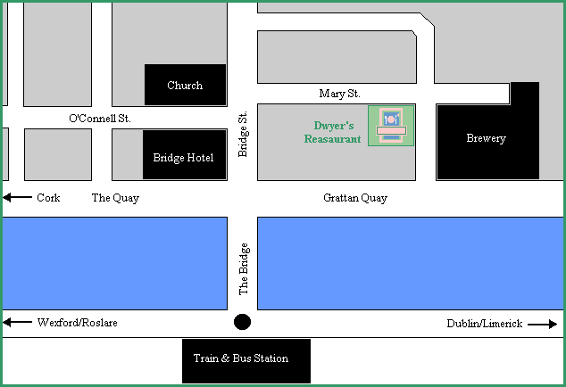

Dwyer's Restaurant is located in Waterford; Ireland's fifth City, situated in the South East of the Country.
In Waterford City, head south from the bridge and continue up Bridge Street for about 50 yards.
Take the first right onto Mary Street. Dwyer's is 50 yards down on the right.
Please ring the doorbell for entry.

For more information about Waterford, pursue the following links.
http://www.amireland.com/waterford_tourism/
http://www.waterfordtourism.org/
http://www.waterford-guide.com/home.htm
http://www.indigo.ie/ipress/waterfd/welcome.htm

Welcome * Martin Dwyer * Menus * Location